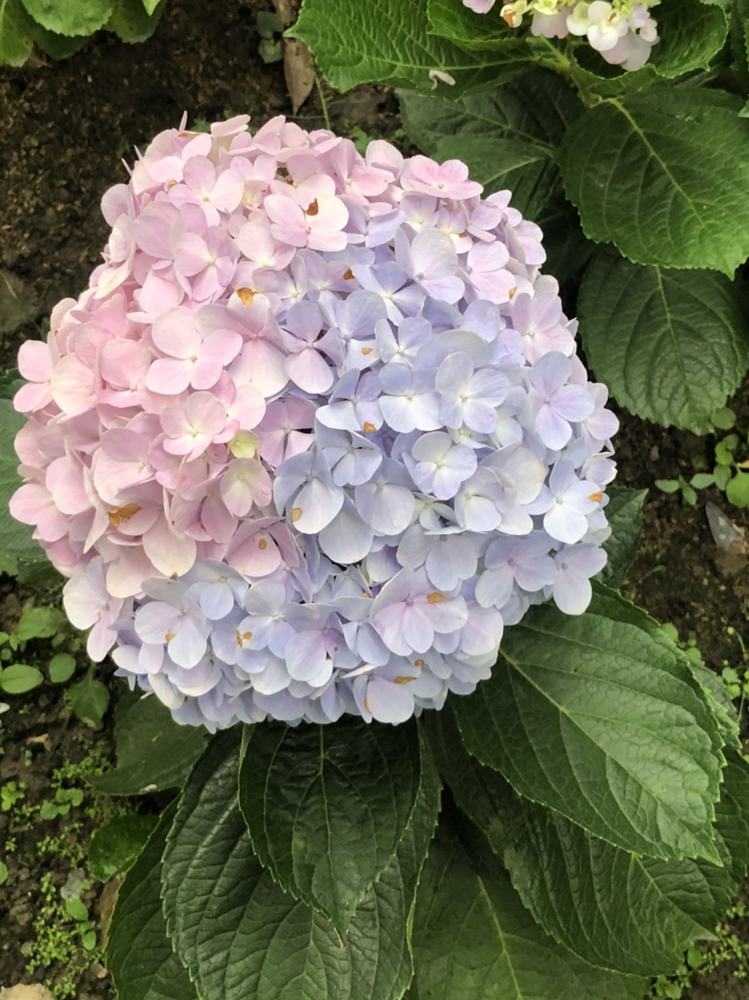
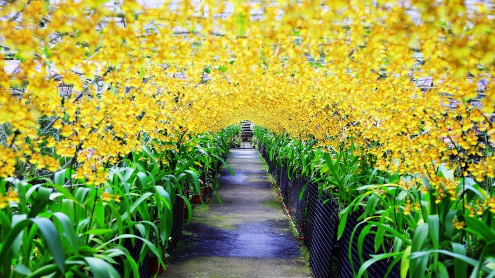
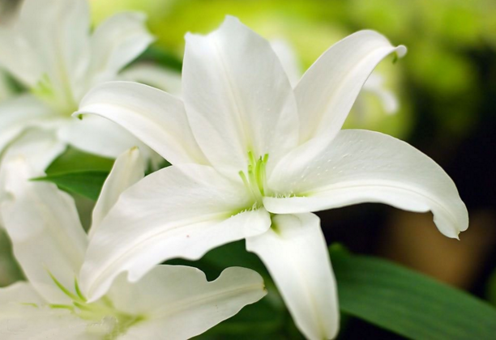

花卉介紹
2024繡球花季到啦！每年5月至6月初夏季節，粉藍、粉紫、粉紅等各色錦簇花團，從陽明山竹子湖、新北萬里高家花田、雪霸休閒農場、武陵農場、明池森林遊樂區等，精選全台超過10處觀賞繡球花的推薦景點，賞花之餘，也一起解密繡球花冷知識！ 
文心蘭，取其優雅文質玲瓏心，又可意會又可言傳，故在本省自從最早有「文心蘭」的稱呼出現後，便沿pic2用成習，也因其花朵頗似穿著膨鬆舞裙、迎風招展婆娑起舞的女郎，而有人稱為「跳舞蘭」，在切花和盆花市場上都佔有很重要的一席之地。
百合屬，是百合目百合科的一屬。其下有100餘種，有時通稱為百合花，均為多年生草本鱗莖植物，主要自然分布於亞洲東部、歐洲、北美洲等北半球溫帶地區。 百合屬物種及人工雜交所培育的品種常被運用於切花及景觀設計中，例如OT百合、東方型百合、玫瑰百合等。 百合屬植物對貓等動物有劇毒，因此用其為觀賞植物時應注意。

紫色鬱金香花語：高貴的、永恆的愛、無盡的愛。 送給情人、閨蜜姊妹淘都是不錯的選擇， 顏色與花種會因為季節而有所不同。